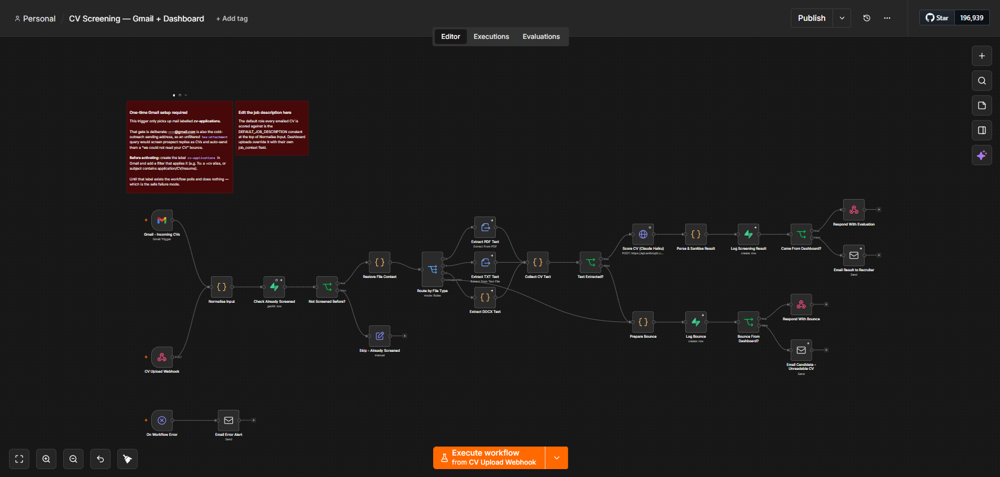

Step 01 · Discovery
First, we talk.
We go through how things run now, what keeps going wrong, and where you want to get to. I work out where automation buys you the most time.
AI Automation
AI, aimed right.
Alvo works out where AI actually helps, builds it into the workflow your team already uses, and trains them to run it without us. Here's how that runs, step by step.
Built with n8nMakeZapierWebhooksREST APIsTwilioClaudeOllamaWhisperElevenLabsSupabasePostgreSQLGoogle SheetsGmailGoogle PlacesAdzunaPythonDockerCloudflarePlaywright
Four steps, discovery to handover.
Step 01 · Discovery
We go through how things run now, what keeps going wrong, and where you want to get to. I work out where automation buys you the most time.
Step 02 · Design
I map the architecture: tools, triggers, logic, integrations. You see the whole plan before I build anything.
Step 03 · Build
I build the workflow and test it end to end, edge cases included, until it runs reliably.
Step 04 · Handover
I hand over the finished system with documentation, so you can understand it and maintain it yourself. Or I can keep managing it for you.
Example automations built for businesses across different industries.
An AI automation built for a local estate agent. When an enquiry comes in, the system qualifies the lead, sends a personalised response and logs the contact. Nobody has to chase it, and nothing sits unanswered.
A job intake and response automation built for a licensed electrical contractor. A new job request triggers an instant AI-written reply, and the job details are captured and routed to the right place. It saves hours of admin a week.
A look at some of the n8n automation workflows I've built.

A job hunting pipeline built in n8n. It searches Google Places and Adzuna at the same time, merges and deduplicates the results, then works through each business in turn: scraping the site for a contact email, using Claude AI to write a personalised cover note and CV, and leaving a Gmail draft ready to send with one click. A single run has turned up 100+ potential job application leads. By hand that is days of work. This takes minutes.

An inbox automation that reads incoming email, sorts it by urgency and type, and routes it without being asked. Urgent messages get flagged straight away, routine enquiries get a drafted reply, and the irrelevant ones are filtered out. It saves busy teams hours of inbox management.

A CV screening pipeline that takes CVs two ways: emailed to a dedicated inbox, or uploaded through a dashboard with its own job description. Claude Haiku scores each one and returns a percentage with specific reasons for and against. A dedup check stops the same CV being scored twice. PDF, TXT and DOCX are parsed in-process, so there is no external service or extra credentials to look after. Every result is logged to a database, so the scores can be checked against real hiring decisions later on. Candidates only ever receive a fixed reply, never an AI-written one.

A webhook fires when a job is marked complete. The workflow waits a day, then sends the customer a personalised review request through Gmail. It checks whether the email actually sent and writes the outcome, confirmed or errored, to a tracking sheet.

Runs weekly, or on demand, scraping business leads from Google Places against a set of search queries. It works through each query, pulls the business details, maps the fields into one consistent shape, and writes each lead straight into a Supabase database, ready for outreach.